Thể loại: Hành động, Hài hước, Đời thường
Bối cảnh: Câu chuyện diễn ra trong thời kỳ chiến tranh lạnh giữa hai quốc gia đối địch là Westalis (phương Tây) và Ostania (phương Đông).
Cốt truyện: Điệp viên hàng đầu của Westalis, Twilight (tên thật là Loid Forger), nhận nhiệm vụ khó khăn: "Thành lập một gia đình trong vòng một tuần để tiếp cận một mục tiêu quan trọng" nhằm ngăn chặn chiến tranh.
Sự trớ trêu: Loid không hề biết rằng người vợ giả của mình (Yor) là một sát thủ, và cô con gái nuôi (Anya) là một người có khả năng đọc suy nghĩ. Cả ba che giấu thân phận thật với nhau, tạo nên những tình huống hài hước và ấm áp.
Sức hút: Câu chuyện kết hợp khéo léo giữa những pha hành động kịch tính (điệp viên, sát thủ) và sự dễ thương, hài hước của cuộc sống gia đình giả lập.
Chuyển thể: Anime đã ra mắt các phần (SS1+SS2) và phim điện ảnh (Code: White), nhận được sự yêu thích rộng rãi.
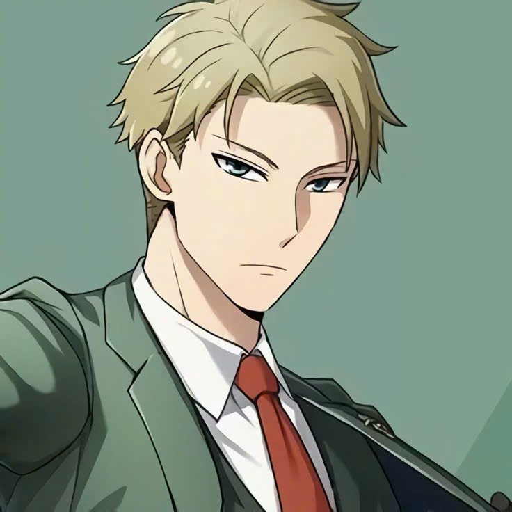
Điệp viên tài giỏi, đóng vai người cha/bác sĩ tâm thần.
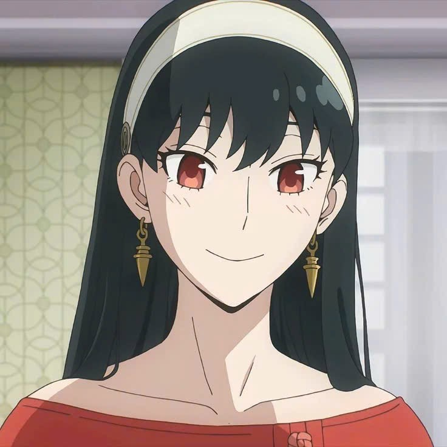
Sát thủ chuyên nghiệp, đóng vai người mẹ/nhân viên văn phòng.
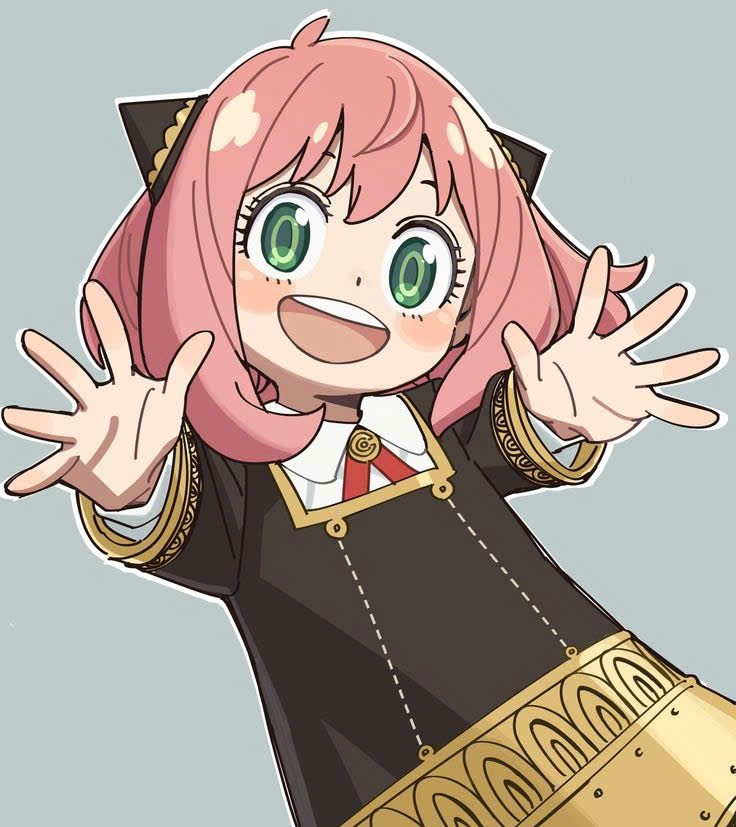
Đứa trẻ ngoại cảm (vật thí nghiệm), có thể đọc được suy nghĩ của Loid và Yor, giúp cô bé biết được bí mật của cả hai.
Chú chó có khả năng tiên tri tương lai, được gia đình nhận nuôi.
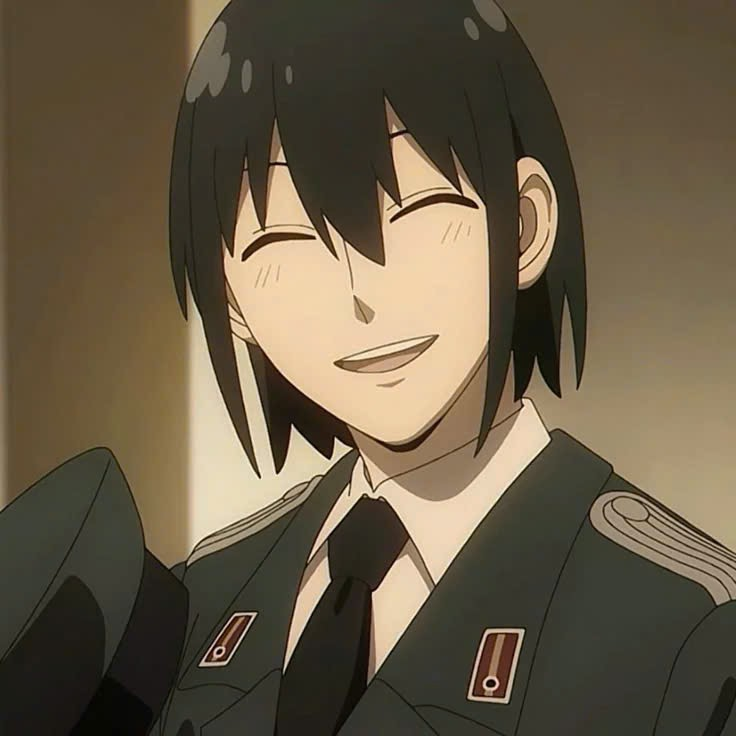
Em trai của Yor, làm việc tại Cơ quan An ninh Quốc gia (SSS) của Ostania. Yuri cực kỳ yêu quý (thậm chí là cuồng) chị gái mình và luôn nghi ngờ Loid, dù cậu không hề biết Yor là sát thủ.
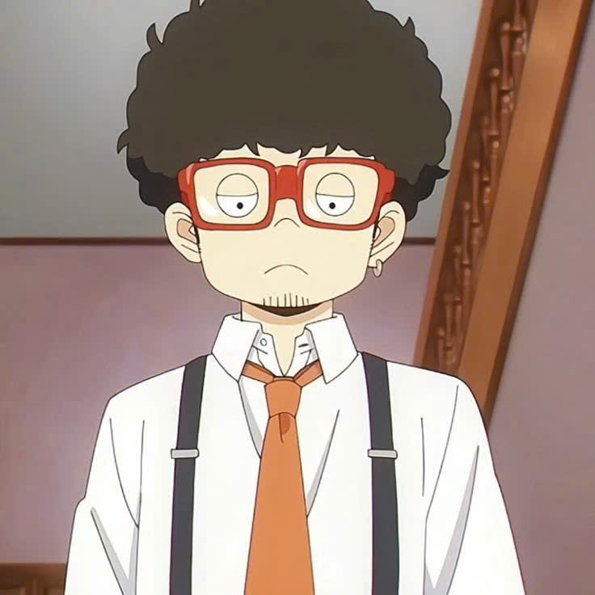
Bạn thân và là người hỗ trợ đắc lực của Loid trong các nhiệm vụ. Franky thường giúp Loid thu thập thông tin hoặc trông nom Anya, dù anh luôn than phiền về sự thiếu may mắn trong tình yêu của mình.
Con trai thứ của mục tiêu chính (Donovan Desmond) và là bạn cùng lớp với Anya. Damian ban đầu rất kiêu ngạo nhưng dần nảy sinh tình cảm "gà bông" với Anya sau khi bị cô bé... đấm một phát vào ngày đầu nhập học.
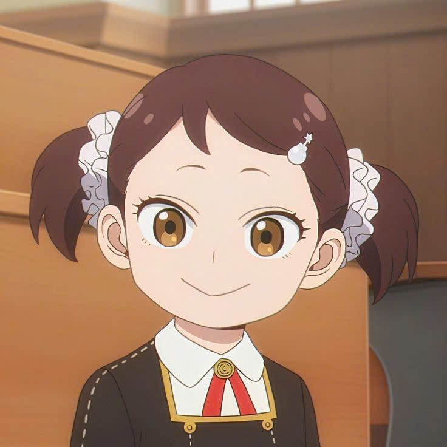
Bạn thân nhất của Anya tại trường, con gái của một tập đoàn sản xuất vũ khí lớn. Becky rất trưởng thành, thích xem phim tình cảm và luôn cố gắng giúp Anya "tán tỉnh" Damian.
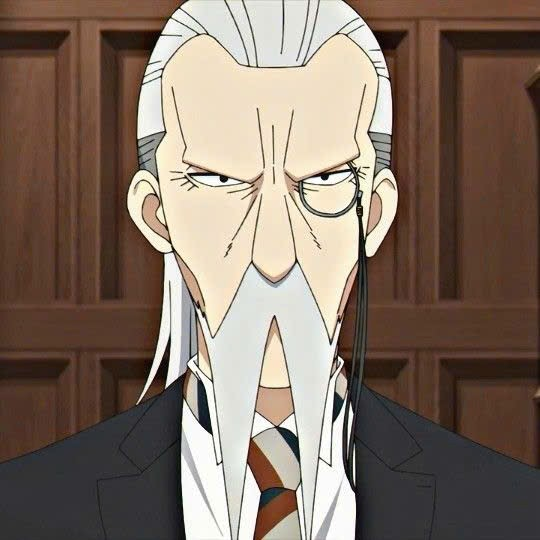
Một giáo viên vô cùng nghiêm khắc nhưng luôn coi trọng sự "tao nhã" (Elegance). Ông là người đã giúp gia đình Forger vượt qua kỳ phỏng vấn nhập học đầy khó khăn.
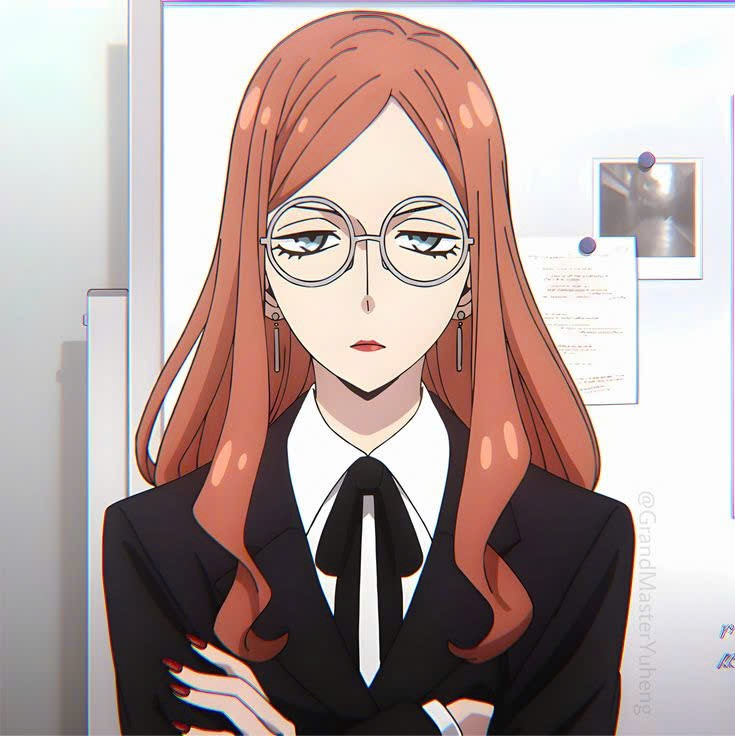
Cấp trên trực tiếp của Loid tại WISE, được mệnh danh là "Người đàn bà thép". Cô là người điều hành Chiến dịch Strix với thái độ nghiêm nghị nhưng đôi khi cũng để lộ sự quan tâm tinh tế.
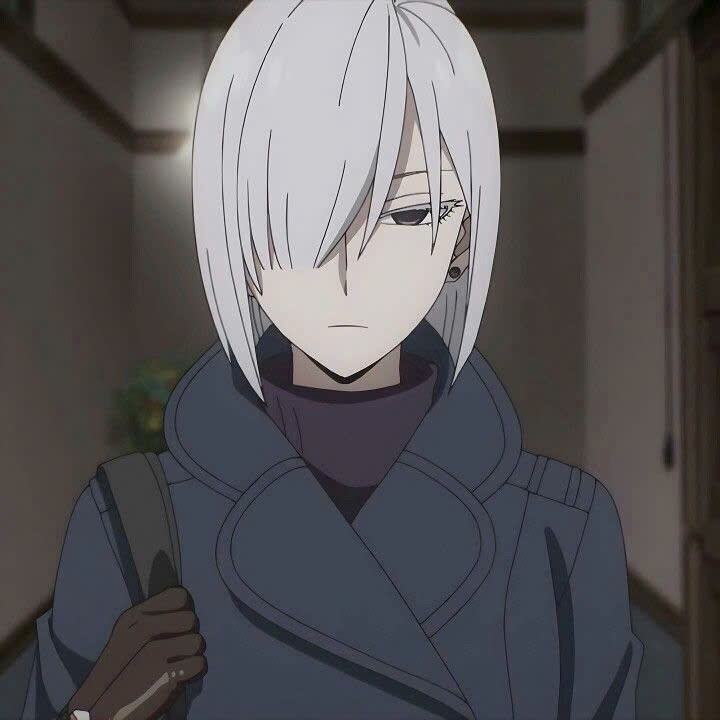
Đồng nghiệp của Loid, người yêu thầm anh sâu đậm và luôn muốn thay thế vị trí làm vợ của Yor. Cô nổi tiếng với gương mặt lạnh lùng không cảm xúc nhưng nội tâm lại cực kỳ mãnh liệt.
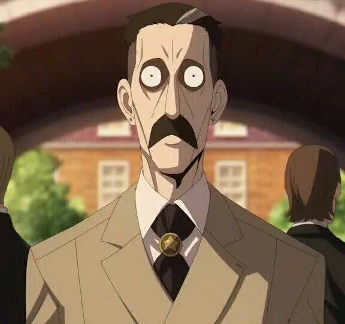
Mục tiêu cuối cùng của Loid, chủ tịch Đảng Thống nhất Quốc gia Ostania. Ông ta là một người cực kỳ thận trọng, hiếm khi xuất hiện trước công chúng và có mối quan hệ xa cách với chính con trai mình.
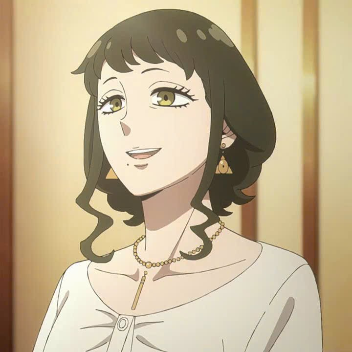
Vợ của Donovan, một nhân vật bí ẩn với tâm lý khá phức tạp, người đã vô tình kết bạn với Yor.
https://spy-x-family.fandom.com/wiki/List_of_Characters